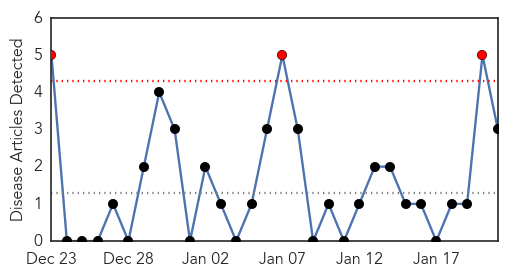
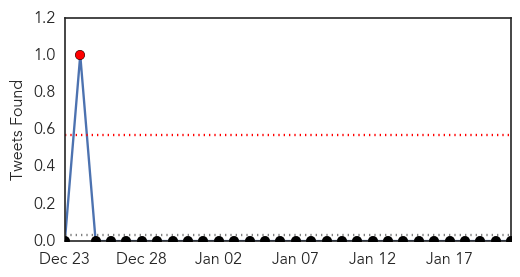
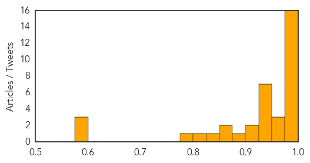

Chikungunya
30-Day Web Trend
3 alerts, 0 warnings

30-Day Twitter Trend
1 alerts, 0 warnings

Article Locations
Article Confidences
Top Articles:
Top Tweets:
-
No tweets found for Jan 21, 2015
Swine Flu
30-Day Web Trend
5 alerts, 3 warnings
30-Day Twitter Trend
0 alerts, 0 warnings

Article Locations

Article Confidences
Top Articles:
- 1.000
- Spurt in swine flu cases sets alarm bells ringing
- 1.000
- Swine flu in India: Hyderabad suspends drunk driving test over swine flu scare
- 0.999
- Swine Flu Alert puts Telangana Administration on High Alert
- 0.999
- With 173 cases this year, Telangana in grip of swine flu
- 0.999
- H1N1 kills 11 in Hyderabad in 30 days, KCR puts medics on alert
- 0.999
- Andhra Pradesh and Telangana worst hit by the swine flu virus
- 0.998
- Five more persons succumb to swine flu in Hyderabad
- 0.998
- Gandhi Hospital not well equipped to handle swine flu
- 0.998
- Telangana seeks Delhi aid to fight swine flu
- 0.998
- Indiablooms - First Portal on Digital News Management
- 0.997
- Swine flu scare sweeps Telangana
- 0.997
- 1 person dies of swine flu in Jind, 2 test positive in Sirsa
- 0.995
- Swine flu alert in district after first death in Amritsar
- 0.990
- Flu vaccine notworking well; only 23 percent effective
- 0.987
- Swine flu: Centre to send three-member team to Telangana
- 0.983
- Swine Flu Kills 3 More, Infects 50 in a Day!
- 0.968
- Telangana govt presses the panic button
- 0.966
- Telangana Chief Minister Briefs PM Modi Over Swine Flu Cases in State
- 0.964
- Bandaru Puts Onus on TS Govt for Failing to Act on Swine Flu Deaths
- 0.948
- Telangana seeks Centre's help as swine flu cases mount
- 0.943
- Swine Flu: Declare Health Emergency in Telangana, says Congress
- 0.942
- Centre sends medicines to Telangana as swine flu cases mount
- 0.939
- Centre sends medicines to Telangana as swine flu cases mount
- 0.938
- Telangana swine flu cases mount, KCR briefs PM
- 0.927
- Telangana swine flu cases mount, KCR briefs PM
- 0.926
- Man Dies of Swine Flu in Chennai; 23 H1N1 Positive Cases Reported this Year in Tamil Nadu
- 0.916
- Telangana worst hit, KCR seeks Narendra Modi’s help
- 0.908
- Hyderabad in grip of swine flu, KCR declares war on virus
- 0.894
- ‘No need to panic’
- 0.874
- Swine flu: 11 die in Telangana; state seeks Centre's help
- 0.871
- Telangana declares all out war on swine flu
- 0.833
- Central government sends health team to Telangana
- 0.812
- Telangana goes all out to tackle swine flu
- 0.776
- Telangana seeks Centre's help to contain swine flu
- 0.598
- Senior delegation to take stock of rising swine flu cases in Telangana
- 0.586
- After Panic Call to PM Modi, Centre Sends Two Special Teams to Hyderabad to Tackle Swine Flu
- 0.580
- Expert panel to review swine flu situation in Hyderabad
Top Tweets:
-
No tweets found for Jan 21, 2015